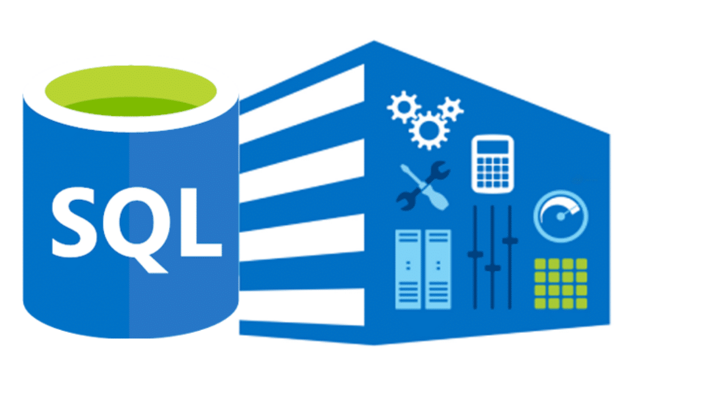

Performed data wrangling using python libraries such as Numpy, Pandas, Seaborn, matplotlib and Json to gather, assess and clean the WeRateDogs dataset gotten from a twitter account that focuses on rating dogs. I tackled some Data Quality and Tidiness issues in the various datasets gathered. After cleaning the dataset, I was able to analyze and visualize insights such as the most common dog breed, dog stage, most common dog name and tweet sources.

Performed Exploratory analysis using python to explore The Movie Database gotten from Kaggle.
Data wrangling was perfomed on over 10,800 movies before exploratory analysis was done using pandas, matplotlib and seaborn libraries.
Performed Exploratory analysis using python to explore bikeshare data from three US cities (Chicago, New York City and Washington).
Imported Pandas and Time module for this analysis. Developed a user interactive platform for user to request to view specific statistical information such as the most popular month, day of week, total travel time of rides, etc.

Performed descriptive analysis on a dataset containing information on 1000 donors to a Charity by using SQL to query the data for insights to help make data-driven fundraising decisions.

Tableau Dashboards for Projects.
Interactive dashboards done to visualize key insights gotten from datasets.
Documented the descriptive analysis performed on dataset containing information on 1000 donors to a Charity. The report contains the defined business problem,
the performed root cause analysis using 5whys, SQL codes written to query the data for insights, visualizations of the insights gotten and actionable recommendations.
The project objective was to help make data-driven fundraising decisions.